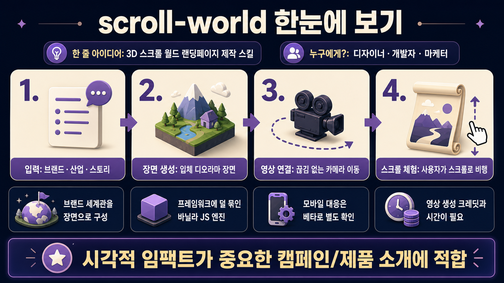

oso95/scroll-world
브랜드나 산업을 스크롤로 비행하듯 탐험하는 3D 월드형 랜딩페이지를 만들도록 돕는 에이전트 스킬 저장소입니다. 핵심은 AI 생성 장면·카메라 영상·바닐라 JS 스크럽 엔진을 하나의 제작 절차로 묶는 것입니다.
무엇을 도와주나?
왜 눈에 띄나?
절차가 명확함
인터뷰 → 장면 생성 → 영상 생성 → 프레임 추출 → 연결 → 인코딩 → QA까지 제작 순서가 스킬 문서에 정리되어 있습니다.
프레임워크 독립성
핵심 스크럽 엔진은 바닐라 JavaScript 기반이라 HTML, Next.js, Vue, Python-served 페이지 등에 이식하기 쉽습니다.
끊김 없는 체험 지향
클립 경계에서 실제 렌더 프레임을 넘겨주는 seam 규칙을 강조해 “팝”이 보이는 전환을 줄이려 합니다.
도입 전 확인할 점
비용과 시간이 듭니다
장면 수에 따라 이미지·영상 생성 크레딧이 필요하고, Higgsfield CLI 인증 및 대기 시간이 전제됩니다.
모바일은 별도 검증
모바일 최적화는 베타로 안내되어 있으며, 720p 경량 인코딩·터치/성능 QA가 필요합니다.
잘 맞는 사용처
제품 소개, 브랜드 캠페인, 산업 프로세스 시각화처럼 첫인상과 몰입감이 중요한 랜딩페이지에 적합합니다.
먼저 해볼 테스트
자기 브랜드의 3~4개 장면으로 짧은 프리뷰를 만들고, seam 전환과 스크롤 부드러움을 확인하는 것이 좋습니다.
한 줄 판단
시각적 임팩트가 중요한 프로젝트라면 시도할 가치가 큽니다. 다만 “정적 웹 템플릿”이 아니라 이미지/영상 생성 파이프라인까지 운영해야 하는 제작형 스킬입니다.
저장소 정보
원본: https://github.com/oso95/scroll-world
설명: A skill that turn any brand into a scrollable 3D world
보고서 생성: 2026-07-15 07:58 KST